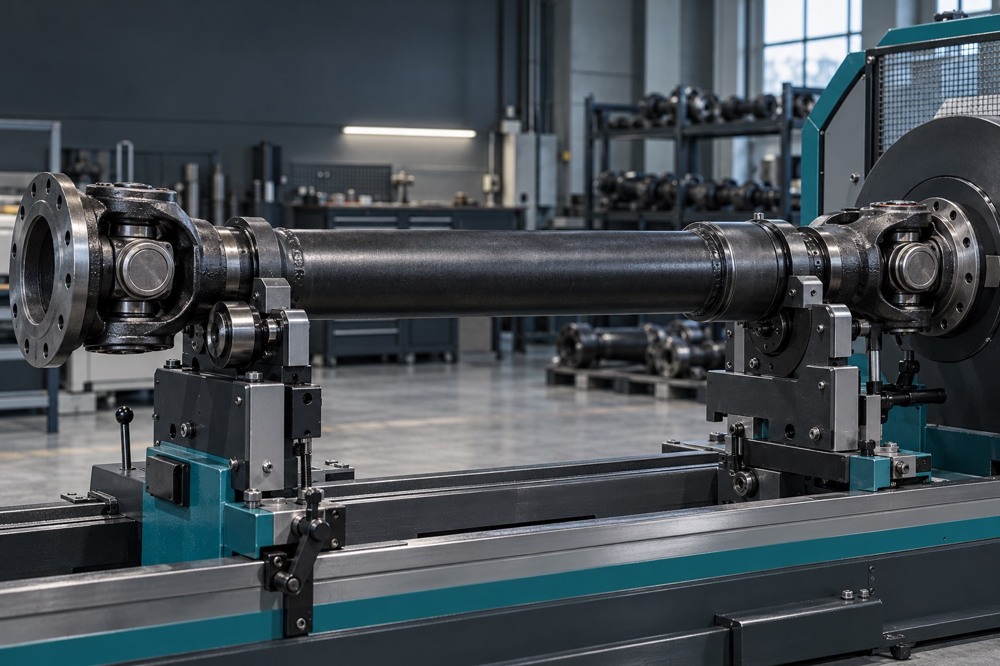
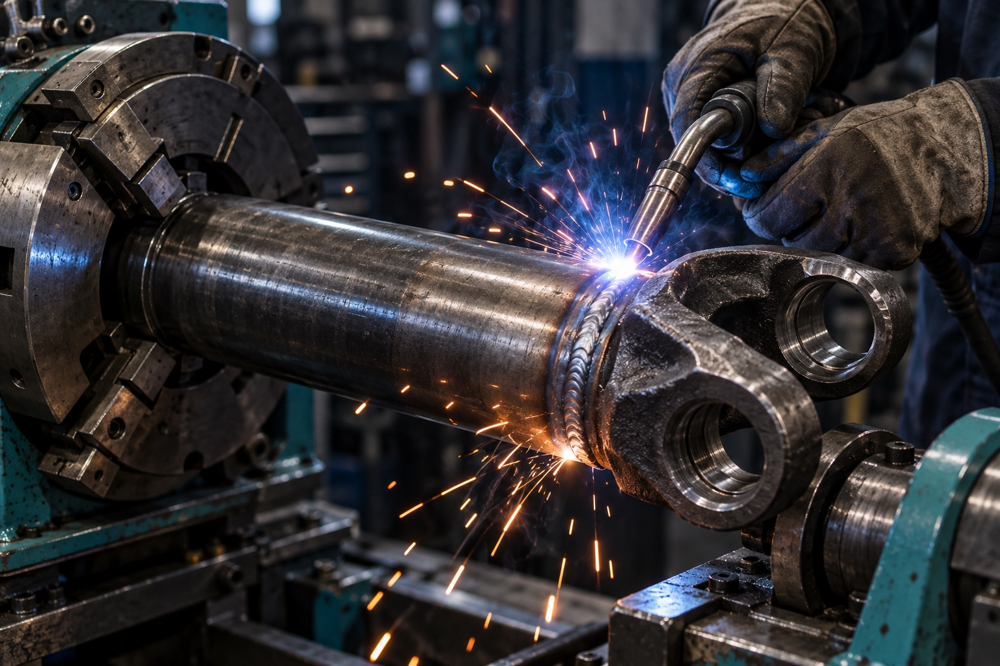

Производство и ремонт карданных валов в Миассе
Изготовим кардан по вашему чертежу или восстановим старый — для легковых машин, грузовиков и спецтехники. Ремонт от 1 рабочего дня, дефектовка бесплатно.
Звоните: +7 (3513) 29-85-22

Чиним любую часть вала и балансируем его целиком
Нажмите на деталь, чтобы узнать, как мы её ремонтируем и сколько это стоит. Балансировочный стенд принимает валы длиной до 5,5 метра.
Услуги и цены
Работаем с валами любых производителей. Цены из прайса компании на ноябрь 2025 года, точную стоимость мастер назовёт после бесплатной дефектовки.
| Услуга | Работа | Цена |
|---|---|---|
| Производство карданных валов | Производство карданных валов | договорная |
| Балансировка карданных валов | Балансировка 2-х опорного карданного вала | 1 500 ₽ |
| Балансировка 3-х опорного карданного вала | 2 500 ₽ | |
| Балансировка 4-х опорного карданного вала | 3 500 ₽ | |
| Замена шлицевых карданных валов | Замена подвижной шлицевой пары | 2 000 ₽ |
| Замена неподвижной шлицевой пары | 1 500 ₽ | |
| Замена крестовин карданных валов | Замена крестовины со стопорными кольцами | 500 ₽ |
| Замена фланца карданного вала | Замена фланца карданного вала | 500-2 500 ₽ |
| Полный ремонт карданных валов | Полный ремонт | договорная |
| Удлинение и укорачивание карданных валов | Удлинение карданного вала с полной заменой трубы | от 1 000 ₽ |
| Удлинение карданного вала с разрезанием и изготовлением втулки-вставки | 3 000 ₽ | |
| Укорачивание карданного вала | 1 500 ₽ | |
| Замена вварных вилок карданных валов | Замена вилки в трубу | 2 000 ₽ |
| Замена подвесных подшипников карданных валов | Замена промежуточной опоры (подвесного подшипника) | от 500 ₽ |
| Замена трубы карданного вала | Замена трубы карданного вала | 1 000 ₽ |
| Дефектовка карданных валов | Дефектовка карданного вала | бесплатно |
| Услуга | Работа | Цена |
|---|---|---|
| Производство карданных валов | Производство карданных валов | договорная |
| Балансировка карданных валов | Балансировка 2-х опорного карданного вала | 2 500 ₽ |
| Балансировка 3-х опорного карданного вала | 3 500 ₽ | |
| Балансировка 4-х опорного карданного вала | 5 000 ₽ | |
| Замена шлицевых карданных валов | Замена подвижной шлицевой пары | 2 500 ₽ |
| Замена неподвижной шлицевой пары | 2 500 ₽ | |
| Замена крестовин карданных валов | Замена крестовины | 800 ₽ |
| Замена фланца карданного вала | Замена фланца карданного вала | 800 ₽ |
| Полный ремонт карданных валов | Полный ремонт | договорная |
| Удлинение и укорачивание карданных валов | Удлинение карданного вала с полной заменой трубы | от 1 500 ₽ |
| Удлинение карданного вала с разрезанием и изготовлением втулки-вставки | 3 500 ₽ | |
| Укорачивание карданного вала | 1 500 ₽ | |
| Замена вварных вилок карданных валов | Замена вилки в трубу | 2 500 ₽ |
| Замена подвесных подшипников карданных валов | Замена промежуточной опоры (подвесного подшипника) | от 800 ₽ |
| Замена трубы карданного вала | Замена трубы карданного вала | 1 500 ₽ |
| Дефектовка карданных валов | Дефектовка карданного вала | бесплатно |
| Услуга | Работа | Цена |
|---|---|---|
| Производство карданных валов | Производство карданных валов | договорная |
| Балансировка карданных валов | Балансировка 2-х опорного карданного вала | 5 000 ₽ |
| Балансировка 3-х опорного карданного вала | 7 500 ₽ | |
| Балансировка 4-х опорного карданного вала | 10 000 ₽ | |
| Замена шлицевых карданных валов | Замена подвижной шлицевой пары | 3 000 ₽ |
| Замена неподвижной шлицевой пары | 3 000 ₽ | |
| Замена крестовин карданных валов | Замена крестовины | 1 500 ₽ |
| Замена фланца карданного вала | Замена фланца карданного вала | 1 500 ₽ |
| Полный ремонт карданных валов | Полный ремонт | договорная |
| Удлинение и укорачивание карданных валов | Удлинение карданного вала с полной заменой трубы | 2 000 ₽ |
| Удлинение карданного вала с разрезанием и изготовлением втулки-вставки | 3 000 ₽ | |
| Укорачивание карданного вала | 2 000 ₽ | |
| Замена вварных вилок карданных валов | Замена вилки в трубу | 1 000 ₽ |
| Замена подвесных подшипников карданных валов | Замена промежуточной опоры (подвесного подшипника) | 1 000 ₽ |
| Замена трубы карданного вала | Замена трубы карданного вала | 2 500 ₽ |
| Дефектовка карданных валов | Дефектовка карданного вала | бесплатно |
Почему к нам, а не в обычный автосервис
Кардан после любого ремонта нужно балансировать, а для этого нужен стенд, которого у большинства сервисов нет. У нас он свой.
- Быстро
- Ремонт — от 1 рабочего дня. Срок изготовления нового вала зависит от сложности и согласуется заранее.
- Балансировка до 5,5 м
- Работаем на собственном сертифицированном балансировочном стенде, подходит для любых КПП.
- Обученные специалисты
- Мастера прошли обучение и сертификацию по изготовлению карданов, ремонту, сварке и балансировке.
- Детали под любую машину
- Адаптируем отечественные комплектующие для японских, европейских и других автомобилей.

Как мы работаем
Заявка
Звоните, пишите на почту или оставьте заявку на сайте.
Чертёж и смета
Уточняем и согласовываем чертежи, считаем стоимость.
Предоплата и работа
Вы вносите предоплату — мы изготавливаем или ремонтируем вал.
Готовая деталь
Отдаём вал точно в оговорённый срок.
Доставка
Транспортными компаниями по городу и в регионы. Снять и установить вал можно прямо у нас на территории.
Оплата
Наличными или безналичным переводом по счёту.
Гарантия
До 1 года. Если найдём брак — проведём дефектовку, и если ошибка наша, исправим за свой счёт.
Партнёры
Расскажите, что с валом, и мы перезвоним в течение рабочего дня
Назовите марку машины и что беспокоит: вибрация, стук, люфт. Мастер подскажет, что делать, и сориентирует по цене и срокам.
+7 (3513) 29-85-22+7 (904) 812-73-16+7 (922) 745-57-54
Общий номер и отдел продаж